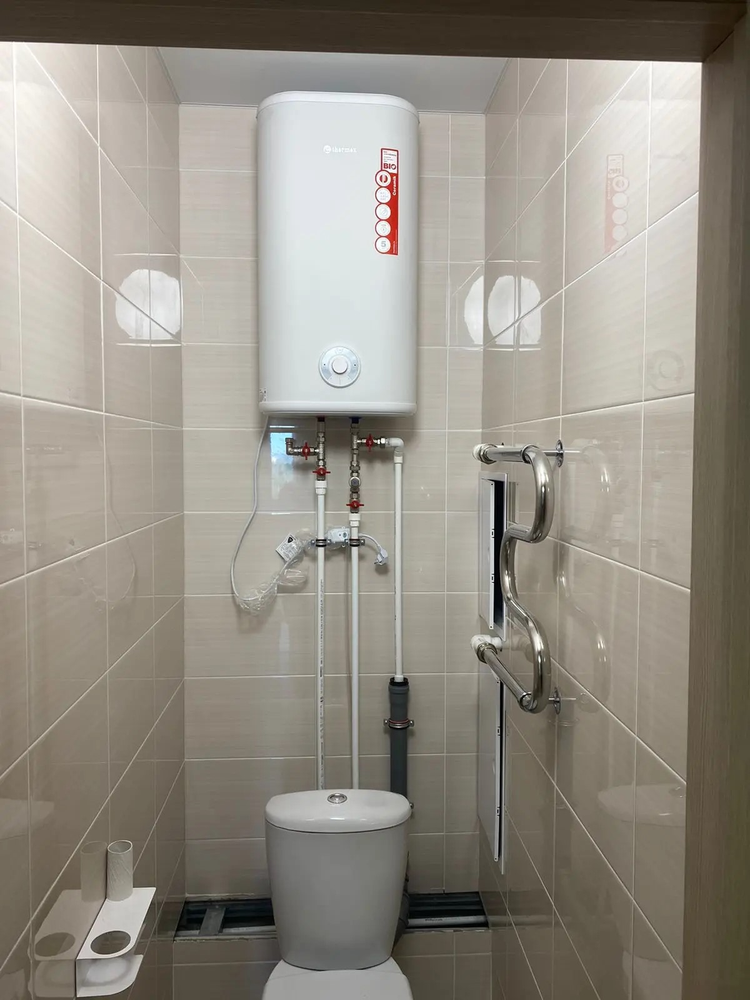
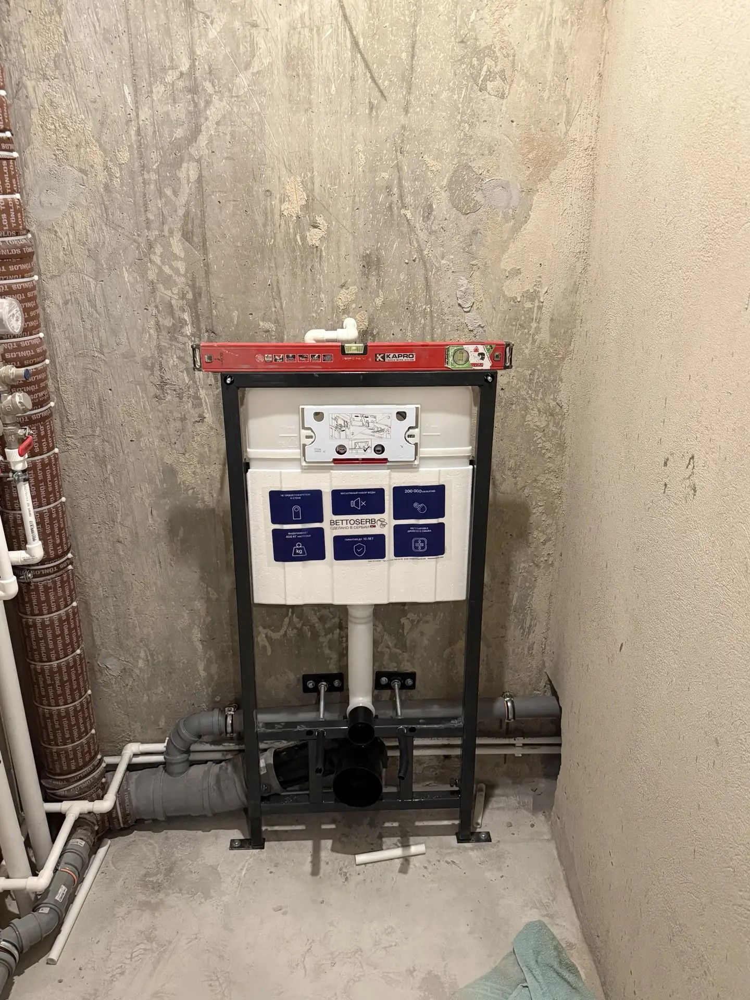
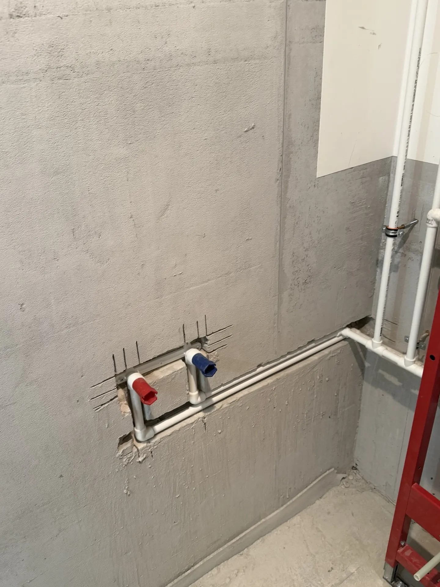

Мои работы — сантехник в Воронеже 12 лет опыта, гарантия
На этой странице представлены реальные фотографии выполненных работ по сантехнике в Воронеже. Все фотографии сделаны после завершения работ и демонстрируют качество монтажа систем водоснабжения, канализации, установки сантехнического оборудования и водонагревателей.
Работаю без посредников более 12 лет. Выполняю как небольшие сантехнические работы в квартирах, так и комплексный монтаж инженерных систем в частных домах и коммерческих помещениях.
Почему выбирают меня
Какие сантехнические работы выполняю
Полный спектр услуг — от мелкого ремонта до монтажа под ключ
Сантехника и смесители
- ✓ Установка и замена смесителей
- ✓ Установка унитазов и биде
- ✓ Установка раковин и моек
- ✓ Монтаж инсталляций
- ✓ Установка ванн и душевых кабин
Бытовая техника
- ✓ Установка водонагревателей
- ✓ Подключение стиральных машин
- ✓ Подключение посудомоечных машин
- ✓ Монтаж полотенцесушителей
Трубы и системы
- ✓ Разводка труб водоснабжения
- ✓ Монтаж канализации
- ✓ Замена стояков
- ✓ Монтаж систем водоснабжения под ключ
- ✓ Установка счётчиков воды
Ремонт и обслуживание
- ✓ Устранение протечек
- ✓ Прочистка засоров
- ✓ Замена шаровых кранов
- ✓ Ремонт сливных бачков
- ✓ Диагностика и профилактика
Не нашли нужную услугу? Позвоните — решу любую задачу!
📞 +7 (950) 754-25-49Фотографии выполненных работ

Монтаж накопительного водонагревателя с подключением к системе водоснабжения.

Установка электрического бойлера с подключением запорной арматуры.

Комплексная установка водонагревателя в санузле квартиры.

Монтаж системы холодного и горячего водоснабжения.

Разводка труб водоснабжения и канализации в санузле.

Монтаж инсталляции и подготовка под чистовую отделку.

Подготовка коммуникаций для установки сантехнических приборов.
Районы обслуживания
Выполняю сантехнические работы во всех районах Воронежа: Центральный район, Коминтерновский район, Советский район, Железнодорожный район и Левобережный район.
Часто задаваемые вопросы
Ответы на популярные вопросы клиентов
💰 Сколько стоит установка сантехники?
Стоимость зависит от типа оборудования и сложности монтажа. После консультации по телефону или осмотра объекта сообщаю точную цену до начала работ.
🚗 Возможен ли выезд в день обращения?
Да. Во многих случаях могу приехать в день обращения. Срочные заявки обрабатываются в первую очередь.
🛡️ Предоставляется ли гарантия?
Да. На все выполненные работы предоставляется гарантия. Используются качественные материалы и проверенные технологии монтажа.
🧰 Поможете подобрать материалы?
Да. Подскажу какие трубы, фитинги, смесители, водонагреватели и комплектующие лучше выбрать, чтобы не переплачивать и получить надежный результат. По желанию заказчика могу сам закупить нужные материалы.
🏠 Работаете только по квартирам?
Нет. Выполняю сантехнические работы в квартирах, частных домах, коттеджах, офисах, магазинах и других помещениях.
⏱️ Сколько времени занимает установка?
Большинство работ выполняется за 1–3 часа. Более сложные проекты, связанные с заменой труб или комплексным монтажом сантехники, могут занимать больше времени.
Нужен сантехник в Воронеже?
Позвоните прямо сейчас и получите консультацию по вашему вопросу.
📞 +7 (950) 754-25-49